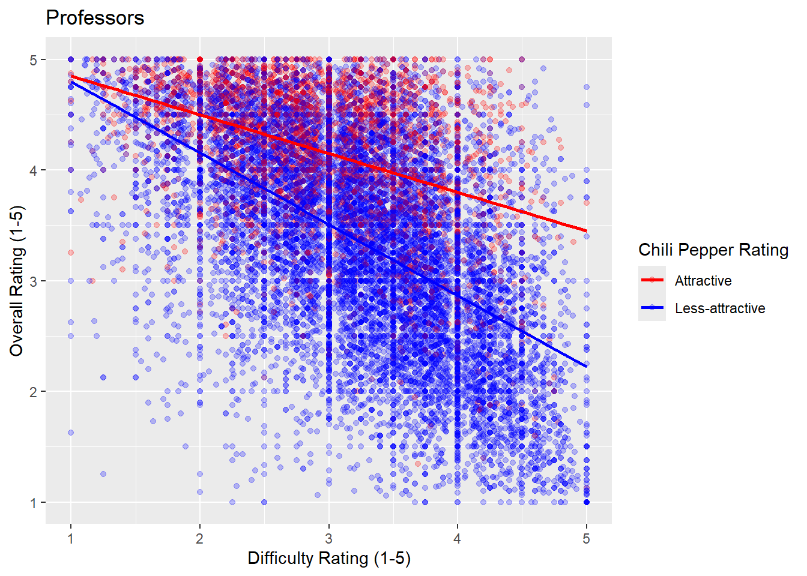
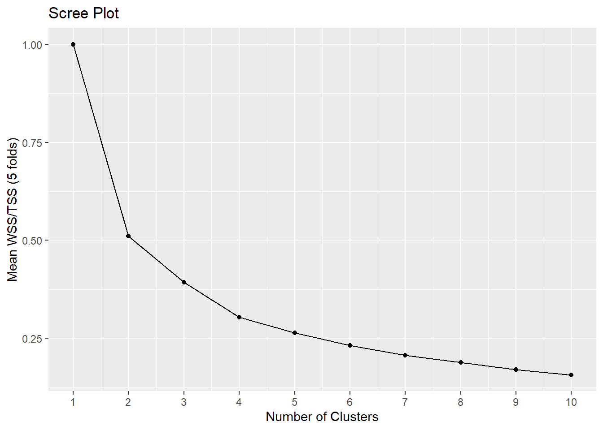

library(here)
library(readr)
library(rsample)
library(ggplot2)
library(tune)
library(recipes)
library(workflows)
library(tidyclust)
library(GGally)Patterns and Potential Biases in Student Evaluations of Professors
Summary
In this project, we will be exploring whether or not students are objective in their evaluations of their professors, by investigating the relationship between overall rating a professor achieves, and whether or not students rated them as ‘hot’ or ‘cold’.
Motivation and Context
On RateMyProfessor.com, students are able to rate their professors, with one of the possible ratings being whether or not the student finds the professor to be physically attractive or not. This project will investigate whether or not this metric causes any bias in how the student rates their professor’s overall difficulty, and overall score.
Packages Used In This Analysis
| Package | Use |
|---|---|
| here | to easily load and save data |
| readr | to import the CSV file data |
| rsample | to split data into training and test sets |
| ggplot2 | to create nice-looking and informative graphs |
| tune | to tune number of clusters in k-means model |
| recipes | to get data ready for modeling |
| workflows | to streamline model building |
| tidyclust | used for k-means clustering model |
| GGally | to plot k-means results |
Data Description
In this project, we will be exploring the ratings of professors from a website called RateMyProfessor. An observation in this dataset is a professor at a university who has been rated by students who have taken one of their courses. There are 22038 observations in this dataset, with 15 variables per observation. The data was collected by researchers in order to examine the link between a professor’s research performance and student evaluations of their teaching. It was collected from RateMyProfessor.com in January of 2018. The training/test split was accomplished by using the initial_split function, randomly allocating 80% (17630) of the observations into the training set, and the remaining 20% (4408) of the observations into the testing set. This split was chosen because it allows the models to be trained a large amount of the data to learn patterns from, while still keeping a meaningful proportion reserved for testing purposes.
RateMyProfessor <- readr::read_csv(here::here("RateMyProfessor.csv"))
RateMyProfessor$colour = ifelse(RateMyProfessor$hotness == "cold", FALSE,TRUE)
set.seed(1111)
rmp_split = initial_split(
data=RateMyProfessor,
prop=.8 #80% in the training set
)
rmp_train = training(rmp_split)
rmp_test = testing(rmp_split)Exploratory Data Analysis
This project will explore which factors are associated with professor ratings on RateMyProfessor.com. It will examine whether a professor’s hotness can be determined from variables such as their overall rating, perceived difficulty, their review count, discipline, gender or accent. First we examine a histogram of the overall ratings of the professors.
ggplot(
data=rmp_train,
mapping=aes(
y=colour
)
) + geom_bar()+
coord_flip()+theme(legend.position = "none")+
ylab("Hotness")+xlab("Count")+ggtitle("Total Hotness Count")
We can see that the relative proportion of professors who are rated “hot” and “cold”, where FALSE is “cold” and TRUE is “hot”.
ggplot(data = rmp_train, aes(x = discipline, fill = !colour)) +
geom_bar(position = "dodge")+theme(legend.position='none')
This barchart shows the various disciplines reported in our data, with the counts of the ‘hot’ professors colored in red, and the counts for the ‘cool’ professors colored in blue. We can observe that the largest number of ‘hot’ professors are in the Social Sciences Discipline, and that the highest proportion of ‘hot’ professors are in the Humanities discipline.
ggplot(
data = rmp_train,
mapping = aes(
x = difficulty,
y = overall,
color = factor(hotness) |> relevel(ref = "hot")
)
) +
geom_point(alpha = 0.25) +
geom_smooth(method = "lm", se = FALSE) + # se = FALSE means no confidence bands
labs(
title = "Professors",
x = "Difficulty Rating (1-5)",
y = "Overall Rating (1-5)"
) +
scale_color_manual(
name = "Chili Pepper Rating",
labels = c(hot = "Attractive", cold = "Less-attractive"),
values = c(hot = "red", cold = "blue")
)`geom_smooth()` using formula = 'y ~ x'
From this scatterplot, we can see the relationship between hotness, difficulty, and overall rating. The professors labeled as “hot” are colored red, and the professors who are rated “cold” are colored in blue. At high difficulties, there are fewer professors who are rated “hot” than at lower difficulties. We can also see from the regression line that at similar difficulty ratings, less-attractive or ‘cold’ professors are predicted to have a lower overall score than ‘hot’ professors, and that this is more pronounced at higher difficulty ratings than at lower ones.
Modeling
k-Means clustering is used to identify groups within our dataset that are similar. The observations are split into k groups, so that each observation is assigned to one group, and the variation within each group is minimized. When using k-means, we seek to minimize the distance between observations within each group, where distance is defined as the Euclidean distance from each member of the group to an arbitrary point. Calculation of the distance of each observation in a group from the center is calculated iteratively, changing the center point until each subsequent calculation is identical to the one before, or a repeating pattern occurs.
set.seed(12345)
kmeans_model <- k_means(num_clusters = tune()) |>
set_args(nstart = 50)
kmeans_recipe <- recipe(~ overall + difficulty + hotness,
data = rmp_train) |>
step_BoxCox(all_numeric_predictors()) |>
step_normalize(all_numeric_predictors()) |>
step_dummy(all_nominal_predictors()) |>
step_zv(all_predictors())
kmeans_wflow <- workflow() |>
add_model(kmeans_model) |>
add_recipe(kmeans_recipe)
kmeans_kfold <- vfold_cv(
data = rmp_train,
v = 5, repeats = 1
)
nclusters_grid <- data.frame(num_clusters = seq(1,10))
kmeans_tuned <- tune_cluster(
kmeans_wflow,
resamples = kmeans_kfold,
metrics = cluster_metric_set(
sse_total,
sse_within_total,
sse_ratio
)
)! Fold1: preprocessor 1/1, model 4/10: did not converge in 10 iterations! Fold2: preprocessor 1/1, model 4/10: did not converge in 10 iterations! Fold2: preprocessor 1/1, model 5/10: did not converge in 10 iterations! Fold3: preprocessor 1/1, model 5/10: did not converge in 10 iterations! Fold3: preprocessor 1/1, model 10/10: did not converge in 10 iterations! Fold4: preprocessor 1/1, model 4/10: Quick-TRANSfer stage steps exceeded maximu...! Fold4: preprocessor 1/1, model 10/10: Quick-TRANSfer stage steps exceeded maxim...! Fold5: preprocessor 1/1, model 1/10: did not converge in 10 iterations! Fold5: preprocessor 1/1, model 4/10: did not converge in 10 iterations! Fold5: preprocessor 1/1, model 10/10: did not converge in 10 iterationstuned_metrics <- collect_metrics(kmeans_tuned)tuned_metrics |>
filter(.metric == "sse_ratio") |>
ggplot(
mapping = aes(x = num_clusters, y = mean)
) +
geom_point() +
geom_line() +
labs(
title = "Scree Plot",
x = "Number of Clusters",
y = "Mean WSS/TSS (5 folds)"
) +
scale_x_continuous(breaks = seq(1,10))
Based on the scree plot, we select 4 clusters using the elbow method. At 4 clusters, the curve levels out, and additional clusters will not result in a more accurate model.
kmeans_4clusters <- kmeans_wflow |>
finalize_workflow_tidyclust(
parameters = list(num_clusters = 4)
)
kmeans_fit <- kmeans_4clusters |>
fit(
data = rmp_train
)
cluster_assignments <- bind_cols(
rmp_train,
kmeans_fit |> extract_cluster_assignment()
)
kmeans_predictions <- augment(
kmeans_fit,
new_data = rmp_test
)
all_clusters <- bind_rows(
cluster_assignments,
kmeans_predictions |> rename(.cluster = .pred_cluster)
)
ggpairs(all_clusters,
columns = c("overall", "difficulty", "hotness"),
upper = list(continuous = "points"),
lower = list(continuous = "points"),
aes(color = .cluster))`stat_bin()` using `bins = 30`. Pick better value `binwidth`.
`stat_bin()` using `bins = 30`. Pick better value `binwidth`.
The clustering results show that the professors are grouped into a blue high overall rating with low difficulty cluster, a purple high overall rating with medium difficulty cluster, a green medium/low overall rating with high difficulty cluster, and a red high overall rating with medium/low difficulty cluster. We are also able to observe that blue and purple clusters are more closely associated with being rated as “hot” and high overall rating, while the red and green clusters are associated with being rated as “cold” with lower overall rating.
Insights
We can see from the analysis performed that students do seem to have a bias when giving an overall rating to professors based on whether they consider them to be ‘hot’ or ‘cold’. From our k-means clustering model, we saw that the majority of ‘hot’ professors were located in groups that were associated with a high overall rating, and a medium to low difficulty rating. This shows that a student’s perception of how successful a class was in teaching can be influenced by a factor that should not have an effect on their understanding and comprehension of the material covered in the class. We also saw in our exploratory data analysis that the majority of ‘hot’ professors are given a higher overall score at the same level of difficulty as ‘cold’ professors, further showing that students are not objective in their evaluations of a course as a whole.
Limitations and Future Work
A limitation behind using data collected from RateMyProfessor.com is that any ratings or opinions collected are subjective, and may not accurately reflect a professor’s true performance. There is also inherent bias, as the collected data is solely from students who chose to spend the time to leave a rating, so the insights gleaned may not be an accurate representation of the population. The rating of ‘hotness’ that was looked at throughout this project is also entirely subjective to each student, and students may not agree on which professors they would report as ‘hot’ or not. The assumptions of k-nearest neighbors were only partially justified, as the subjective nature of the ratings means that professors with similar scores across different variables may not actually be similar to each other.